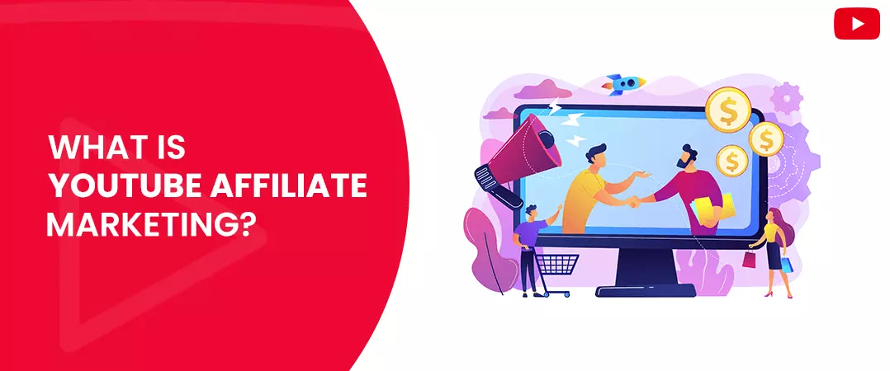
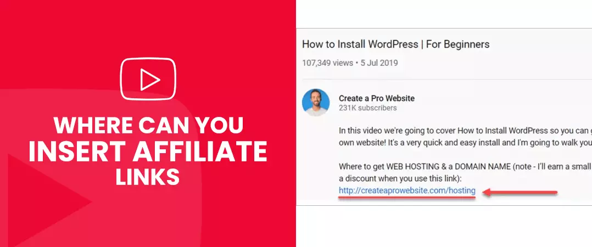
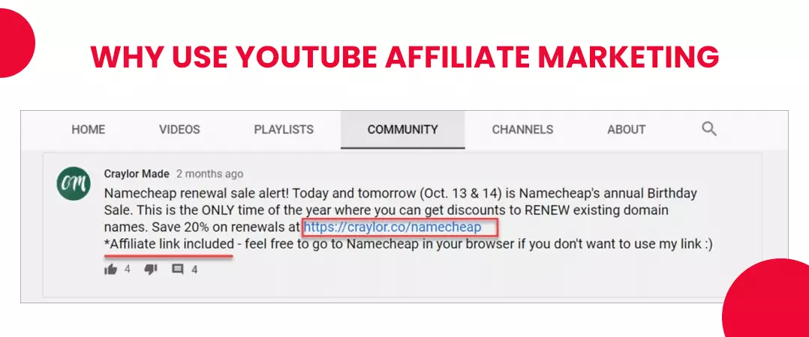
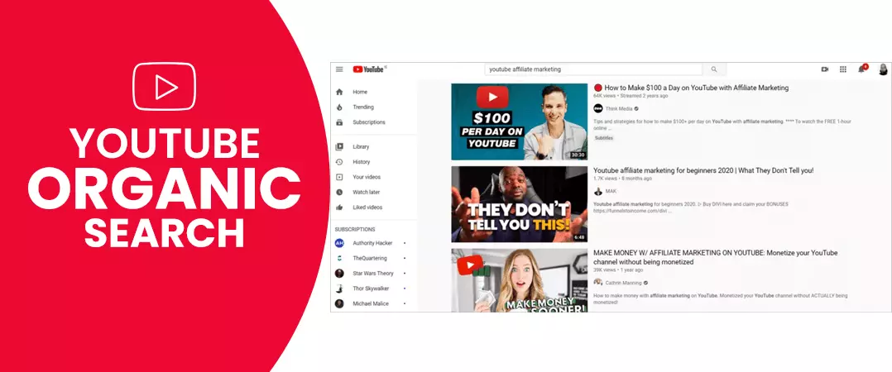
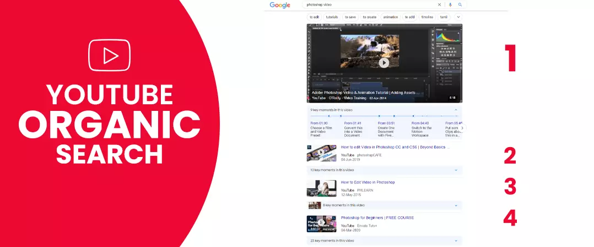
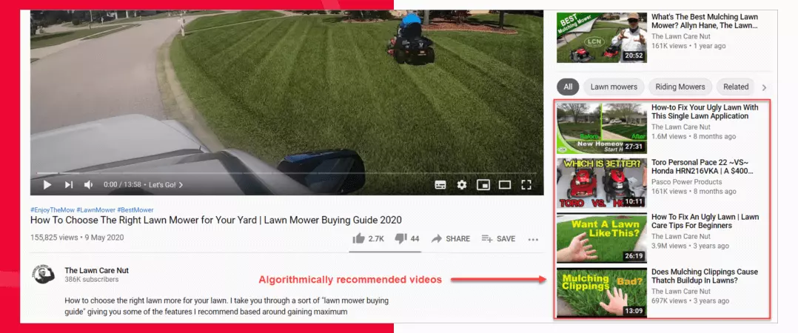
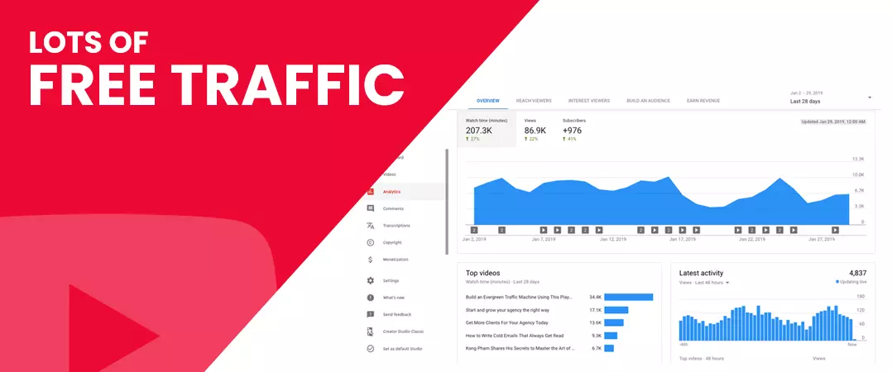
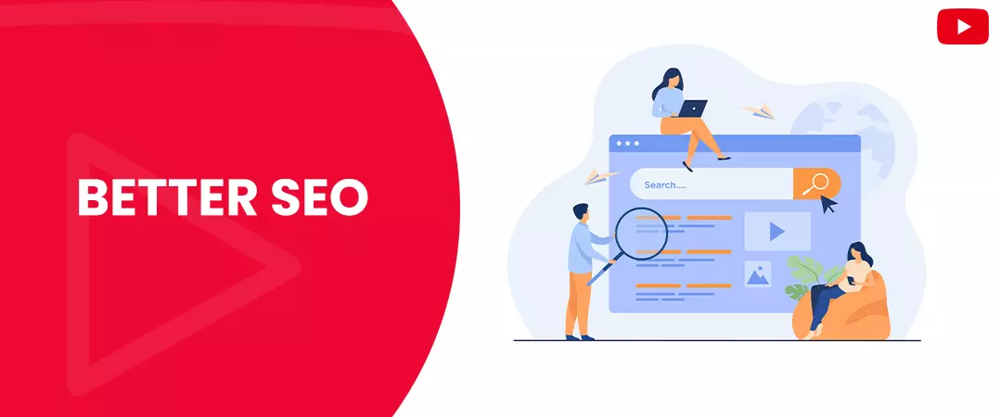
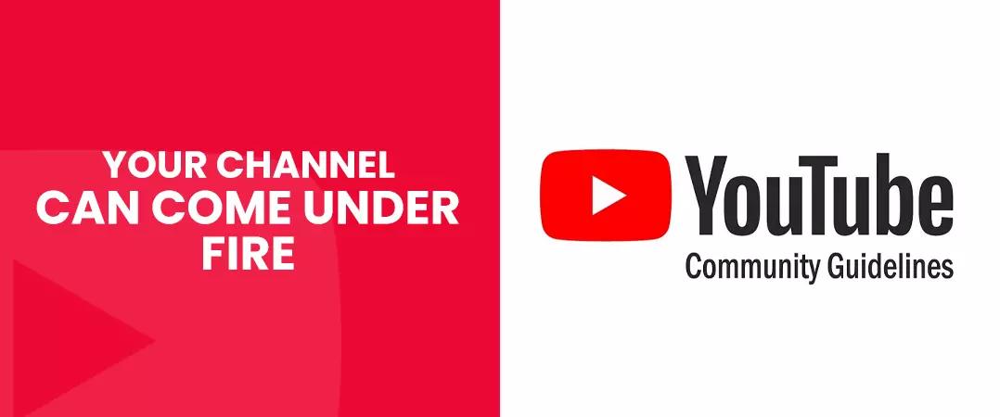
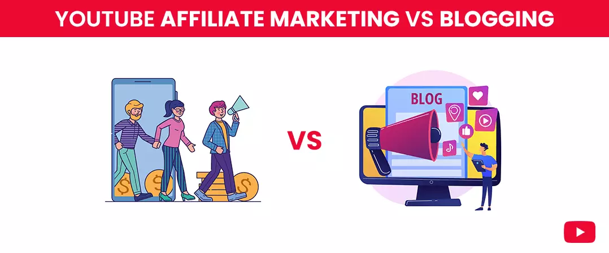

Imagine a scenario where you're given a choice between reading a 1000-word article or watching a 10-minute video on YouTube. What will you choose? If it's later, you are not alone; you belong to the 2 billion + users that watch over 1 billion hours of content on YT every day.
The video streaming platform is a vastly untapped market ripe for the taking.
Are you looking for a way to make a profit as an affiliate marketer? - why not give YouTube a shot.
But before we go any further, let's understand a few things about YouTube affiliate marketing - is it something you want to do? - Only one way to find out.
Please stick with us till the end.
Contents
- 1. What Is YouTube Affiliate Marketing
- 2. Where Can You Insert Affiliate Links
- 3. Why Use YouTube Affiliate Marketing
- 4. YouTube Organic Search
- 5. Google Search Results
- 6. Related Videos
- 7. Build Loyal Community
- 8. Lots of Free Traffic
- 9. Better SEO
- 10. Your Channel Can Come Under Fire
- 11. YouTube Affiliate Marketing Vs. Blogging
What Is YouTube Affiliate Marketing?

As mentioned before, YouTube is a platform that gets a staggering 2 billion + users every month that together accumulate billions of hours of watch time and views - Mind-blowing, right? These network users are the reason this platform, as well as its creators, earn revenue.
Now, before we go any further, let's get one thing out of the way. Affiliate marketing has nothing to do with you being part of the YT partnership program. To become associated with the latter, you have to meet the following requirements.
- You need to have 1000 subscribers for your channels.
- Total 400 hours of watch time.
Channels that managed to meet the said quota are eligible to monetize their videos and earn revenue by showing ads to those who watch their content.
As you can tell, becoming a member of the YouTube partnership program is not a cakewalk. It will take months, if not years, to attain the target numbers.
Do not be discouraged just yet
Enter 'Affiliate Marketing.' What is it? The term is coined for the practice of earn incoming by producing videos that redirect the audience to purchase suggested products.
YouTube affiliate programs provide each creator with a unique link - the link is inserted in their videos or the description box. This link also empowers brands to monitor the performance of the partner affiliates.
As an affiliate on YouTube, you make a commission from brands on every sale made from your referral link.
You can become a YouTube affiliate program without being part of the YT partnership program. Even if you are a small creator with fewer subscribers, you have the opportunity to make money from this model.
Where Can You Insert Affiliate Links?

- Your 'video description' will probably be your first choice. YT has no problem when you insert affiliate links in your description but be sure not to go overboard and include multiple links.
- You probably were unaware, but your 'Community Tab' is also ideal for link placement. If you prefer using this section to interact with your audience, then this is the place where you should drop your link.
- End screen - did not see this coming did you? Well, the end screen can indeed be a little tricky to use but not undoable. What you can do is, instead of your affiliate link, you can redirect visitors to your website, where the real magic happens.
Tip: let your viewers know about the link via disclosure message.
Why Use YouTube Affiliate Marketing?

Why not use a YouTube affiliate marketing program? - Think of it as an addition to your ongoing affiliate marketing endeavours.
If you already run a successful blog, then creating YT videos to complement it is more than a cherry on top of your cake - you get an additional source for free traffic, which is essential for an affiliate marketer.
YouTube provides everything a creator needs inside a single interface called YT studio. All that is required from you is an initial investment in a webcam, a microphone, editing tools, etc.
You have a golden opportunity to build a solid subscriber base, so do not keep it on the back burner. Having a loyal following ensures that you always have eyes for your affiliate links.
How Can You Get Traffic to YouTube Videos?
Traffic is the lifeblood of successful affiliate marketing on YouTube. Hence, we must take some time and discuss how you can get your affiliate link in front of more eyes.
YouTube Organic Search

After Google, YouTube takes the second spot for the most visited search engine. You have to do everything possible to make sure that your videos show up in the search results for queries of your target audience. Top results win the highest traffic, resulting in more exposure for your YouTube affiliate program link.
How can you cement your spot in the top rankings? Well, that's why we are here.
Let's take this one step at a time:
- YouTube search engine optimization: Like Google, you have to optimize your videos to rank for your targeted keywords. So how can you find the correct search terms?
- Well, why not start by asking YT itself? - YouTube is a search engine; hence it holds a repository of search terms used by its network users. All you have to do is insert keywords of your choice in the search tab, and the auto-suggest feature of YouTube will reveal recommendations relevant to your initial input.
- You can use Google's free keyword planner to find more variety in YouTube keyword suggestions.
- The intention behind users' search queries on YouTube is different from other search engines. Hence, make use of Google trends to find the search pattern for your newly discovered keywords.
- Unlike a page on your website, you don't have many text-based opportunities for YouTube video optimization . Make the most of what you have. Your video title description and tags form an essential part of your metadata and some of the only places to utilize text.
- Place your primary keyword at the start of your 'Title' - your title has a 100-character limit, and only 70 are visible when your video shows up in the search results.
- When it comes to your 'video description,' You should include your primary keyword in the first 25 characters. Though 5000 characters long, only the first three lines of your description are visible when the user watches your video - clicking on the "show more" will reveal the rest. Hence, the beginning of the description should contain your YouTube affiliate link.
- YT has not set a limit on the number of tags that you can use in your video. However, it would help if you did not go past the 400-character mark. The tags you select should be relevant to your primary keyword and cover topics in your video.
Google Search Results

Google is the parent company of YouTube; owing to this fact, there are many similarities in how content is ranked on each search engine. Google prioritizes YT videos in its SERPs for specific keywords, particularly those used to gain knowledge. E.g.: How to learn digital marketing.
When you are discovering your targeted and LSI keywords, make sure that the ones you find are searched for on YouTube and Google. Try out different combinations of long-tail keywords.
Related Videos

Related videos show up next to the video the user is currently watching. Recommendations appear on the right-hand column of the screen on desktop, on mobile; the suggestions are given below:
- Related videos comprise the type of content you usually prefer watching but are produced by creators that you may or not have previously known.
- How can you secure a spot in the recommended or related video section? - It's not that hard provided you follow the below points:
- Produce high-quality, engaging content that will keep your viewers hooked for a longer time; 10 minutes should be the average length of your videos.
- Include a solid call to action in each of your videos - you can ask your audience to like, subscribe, or drop a comment before they exit.
- Create a title that is relevant to the content
- In your video, use cards and end screen to promote more of your content and playlists.
- Design an eye-catching thumbnail - your viewers will see this before clicking and coming to your video.
- Refer to the YouTube SEO steps stated above.
YT recommendation algorithm is designed to recommend the best content to its network users. If you can attract more views, watch time, and engagement for your videos, then you can be sure that more people will see your creations.
More traffic will automatically bring more clicks for your YouTube affiliate link.
Build Loyal Community

Well, your subscribers are your most important asset - they are the ones who are notified about your new content releases and are also the ones who watch your videos more times than those who are not subscribed to your channel. I am sure you're starting to get the picture.
Let's take a look at Mr. Beast - an individual YouTuber that has built a strong community of 63 million subscribers. His audience is the first to get notified about his new video releases; they also receive push notifications on their mobile devices.
Views will continue to pile up on your videos when you have loyal subscribers to back up your channel. You will have to do something extraordinary not to get paid by YouTube affiliate programs.
Growing the number of subscribers on your channel can take a while; you can instead buy YouTube subscribers from authentic websites. The subscribers you receive are your targeted audience, forming a crucial part of your online community.
Pros and Cons of YouTube Affiliate Marketing
The Pros
i. Easy To Start
YouTube is a platform that is readily available to anyone who wants to start a channel. But you may require some initial investment in equipment such as microphones, webcam, editing software, etc., to get started.
ii. Lots of Free Traffic

The platform has something for everyone's preference; you are bound to have watchers for the content you produce. As an added advantage, the popular video streaming service does not witness much competition compared to other popular social platforms like Facebook or website blogs.
iii. Room for Creativity
As compared to blogs, vlogging provides much more space to incorporate your creativity. You try out different formatting, animations, and effects to enthral your viewers and give them a better user experience.
iv. Build Your Loyal Community
YT is a two-way street that facilitates meaningful communication between the creator and their audience. You cannot miss the opportunity to build a strong community of subscribers who will interact with your content (not to mention the YouTube affiliate program links). When more people love what you do, they are directly responsible for your success - on and off the platform.
v. More Choices
YouTubers that are part of the YT partnership program have little control over the type of Ads that shows up on their videos - content that depicts violence or profanity. But as an affiliate on YouTube, you have every freedom to decide on the brand you want to partner up with. No strings attached.
vi. Better SEO

Videos make up 55% of all searches on Google, 82% of all the videos that appear are from YouTube.
The Cons
i. More Extended Learning
If you are new to the vlogging gimmick without any prior experience in video creation or editing, then my friend, you are in for a ride. There is a long learning process waiting for you ahead, and it could be a while before you start producing your first video. There is also the question of "how comfortable you are in front of a camera."
ii. Your Channel Can Come Under Fire

YouTube gives you a free hand to exercise your creative muscles, but that doesn't mean that you get to go off the rails and violate YT guidelines that dictate your very existence on the platform. YT has the right to suspend or even terminate your channel forever. So, we advise you to stay within your lane and preferably brush up on YT policies before you take the next step.
iii. Referral Link Is Long
The platform has defined character limits for your video descriptions and YouTube affiliate program links tend to take up many of them. But there is a way around this limitation; you can use link shorteners like (bitly.com) to shorten your referral link before placement.
YouTube Affiliate Marketing Vs. Blogging

If you have a solid footing as a blogger with a successful affiliate marketing track record, then it is high time you spread your wings into the vlogging realm. You can use it as a means to appraise your existing blog.
On the contrary, if you start as an affiliate, we recommend spending some time perfecting your primary affiliate marketing source before exploring other areas to expand.
Now, let's compare blogging to vlogging and see how they measure up to each other.
In the creativity department, the platform takes the upper hand; its algorithm gives preference to unique videos that keeps the audience engaged for a long time. When we look at a typical blog, there is no room to incorporate any creative elements besides playing around with themes, font size, or colors. Writers follow the same recurring SEO practices that the Google search engine is built upon.
But the need for creativity demands more from YT video creators. Outsourcing work is not viable because a channel is built around you and the type of content you produce - you cannot afford to deviate from your creativity and allow the inclusion of foreign elements into your productions.
On the other hand, the creation of text-based blog articles is usually outsourced to third-party entities.
On this platform, consistency is expected from platform creators. Channels, big or small, can fall out of grace with the algorithm when they fail to keep up with their content schedule. At least one video has to go up on a channel every week.
Blogs, however, are not bound by the chains of consistency, giving writers the freedom to come up with new content now and then at their discretion.
YouTubers can gain a substantial audience to their channel; this is mainly because YT experiences less competition than its blog counterpart. Getting traffic is easy; maintaining it, on the other hand, is a whole different ball game.
On this platform, it is much harder to convert visitors to your goals. Besides your actual content, there is not much you can do to improve the user experience on the video streaming platform.
We hope that you found our article on ‘How to start affiliate marketing on YouTube’ helpful. We have tons of such content on our website. Be sure to check them out.
Are you an affiliate on YouTube? How has YouTube channel affiliate marketing worked out for you?
Feel free to share.